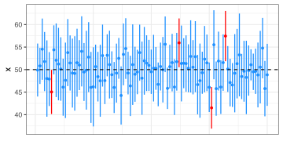
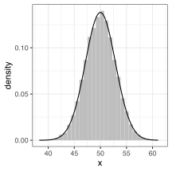
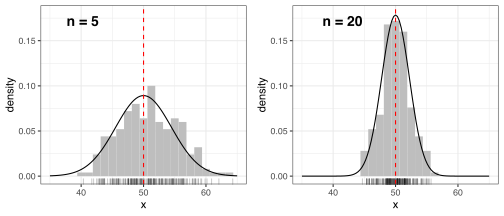
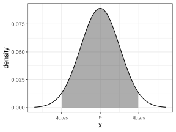
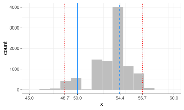

# загружаем необходимые библиотеки
suppressPackageStartupMessages(library(tidyverse))
suppressPackageStartupMessages(library(magrittr))
suppressPackageStartupMessages(library(cowplot))
# настройка темы графиков
theme_set(theme_bw())Доверительный интервал - это один из видов интервальной оценки какого-либо параметра (в противоположность точечной оценке).
Доверительный интервал — это интервал, построенный с помощью случайной выборки из распределения с неизвестным параметром, такой, что он содержит данный параметр с заданной вероятностью (надёжностью).
На графике ниже приведена демонстрация работы доверительного интервала. Для некой популяции были сгенерированы \(N=100\) выборок размером \(n=12\) каждая. По каждой выборке было вычтено выборочное среднее и построен доверительный интервал. Соответственно, каждый интервал либо содержит истинное среднее (синие интервалы), либо не содержит (красные интервалы). Если у нас есть неизвестна генеральная совокупность, а лишь выборка (так обычно и бывает), то мы не знаем, содержит ли данный конкретный интервал истинное значение среднего, однако мы знаем, что в среднем \(\approx 95\%\) таких интервалов его содержат (94 интервала из 100 в случае нашей симуляции).
# создадим генеральную совокупность
set.seed(1)
true_mean = 50
true_sd = 10
population = rnorm(100000, mean = true_mean, sd = true_sd) # мы не знаем истинных значений среднего и стд. откл.
# создадим N выборок размером n и для каждой посчитаем доверительный интервал
N = 100
n = 12
sample_ci =
matrix(NA, nrow = N, ncol = 3) %>% # будем сохранять результаты в матрицу
set_colnames(c("mean", "conf.lower", "conf.upper")) # названия для колонок
for (i in 1:N) { # N симуляций
generated_sample = sample(population, n) # генерируем выборку размером n
# используем готовую функцию для расчета среднего и ДИ
sample_ci[i, ] = mean_cl_normal(generated_sample) %>% as.matrix()
}
sample_ci %>%
as_tibble() %>%
mutate(n = 1:n()) %>% # добавляем номер строки
# содержит ли ДИ истинное среднее?
mutate(has_mu = ifelse(true_mean>=conf.lower & true_mean<=conf.upper, "T", "F")) %>%
ggplot() +
geom_pointrange(aes(x = n, ymin = conf.lower, y = mean, ymax = conf.upper, col = has_mu),
size = .6, fatten = .8) +
geom_hline(yintercept = true_mean, col = "black", linetype = "dashed") +
theme(axis.title.x = element_blank(),
axis.text.x = element_blank(),
axis.ticks.x = element_blank(),
legend.position = "none") +
labs(y = "x") +
scale_color_manual(values = c("T"="dodgerblue", "F"="red"))
Отличительной особенностью доверительного интервала (и стандартной ошибки среднего) по сравнению с дисперсией, стандартным отклонением и межквартильным разбросом является то, что доверительный интервал отражает точность оценки параметра на основе имеющихся данных, тогда как дисперсия (и другие) нужны для выражения разброса данных. Чем больше размер выборки, тем точнее мы можем оценить значение параметра. Однако меры разброса данных не зависят от размера выборки, бóльшая выборка нам может разве что помочь точнее оценить дисперсию.
Предоложим, что у нас есть генеральная совокупность с нормальным распределением, в которой мы знаем истинное среднее (\(\mu = 50\)) и стандартное отклонение (\(\sigma = 10\)). Мы хотим по небольшым выборкам (например, \(n=12\)) составлять такие интервалы, среди которых \(\approx 95\%\) содержали истинное значение среднего. Попробуем провести симуляцию генерации \(N = 10000\) таких выборок и посмотрим на средние значения в этих выборках (точечные оценки истинного среднего).
N = 10000 # число симуляций
n = 12 # размер выборки
set.seed(1) # устанавливаем фиксированную "точку отсчета" для генератора случайных чисел
population = rnorm(100000, mean = 50, sd = 10) # генеральная совокупность
sample_means = numeric(N) # заготовка вектора под расчитанные выборочные средние
for(i in 1:N){ # симулируем
generated_sample = sample(population, n) # делаем выборку из генеральной совокупности
sample_means[i] = mean(generated_sample) # считаем выборочное среднее
}
# строим гистограмму
ggplot(tibble(x = sample_means)) +
geom_histogram(aes(x = x, y = ..density..), fill = "gray", bins = 30) +
stat_function(fun = dnorm, args = list(mean = 50, sd = 10/sqrt(n)))
Оказывается, что полученные значения sample_means (\(\bar{x}_i\)) будут иметь нормальное распределение со средним, стремящимся к истинному среднему \(\mu\), и стандартным отклонением, стремящимся к \(\sigma/\sqrt{n}\) (по центральной предельной теореме). Т.к. стандартное отклонение зависит от размера выборки, мы видим что большие выборки дают более близкие друг к другу -ведь они более правильные! Ниже приведен рисунок с двумя гистограммами распределения выборочных средних, на которых приведены по 200 выборочных средних для выборок размером \(n=5\) или \(n=20\).

Итак, по выборке мы можем получить приблизительную оценку \(\bar{x}\) истинного значения среднего, а также оценку \(s\) стандартного отклонения данных. По центральной предельной теореме это также нам позволит получить теоретическую оценку \(s/\sqrt{n}\) разброса (стандартного отклонения) тех значений выборочных средних, которые мы бы получили, если бы анализировали несколько выборок размером \(n\). Эта оценка называется стандартная ошибка среднего и она нужна для оценки точности нашего представления о среднем значении.
Т.к. выборка нам дает точечную оценку среднего и интервальную оценку разброса оценок, исходя из свойств нормального распределения мы можем вычислить диапазон, который будет содержать более 95% подобных выборочных оценок (а это и будет доверительный интервал!).
\[0.95 = P\Big(q_{\mathcal{N}(\bar{x},\sigma)}^{0.025} \leq \mu \leq q_{\mathcal{N}(\bar{x}, \sigma)}^{0.975}\Big)\]
В данном случае мы в качестве границ доверительного интервала использовали \(2.5\) и \(97.5\%\) квантили нормального распределения \(\mathcal{N}\big(\text{mean} = \bar{x},\ \text{sd} = \sigma\big)\), которые ограничивают \(95\%\) данных (см. рисунок ниже).

# общее количество данных - 100%
# 2.5% данных должно быть не больше, чем левая граница диапазона
# 97.5% данных должно быть не больше, чем правая граница диапазона
# 97.5 - 2.5 = 95%
qnorm(c(0.025, 0.975), mean = 50, sd = 10)#> [1] 30.40036 69.59964Равносильно этому мы можем трансформировать выборочное распределение к стандартному нормальному распределению
\[T = \frac{\bar{x} - \mu}{\sigma / \sqrt{n}}\]
а для полученного стандартизированного значения можно использовать квантили стандартного нормального распределения
\[0.95 = P\Big(\bar{x} + q_{\mathcal{N}(0, 1)}^{0.025} \cdot \frac{\sigma}{\sqrt{n}} \leq \mu \leq \bar{x} + q_{\mathcal{N}(0, 1)}^{0.975} \cdot \frac{\sigma}{\sqrt{n}}\Big) \approx P\Big(\bar{x} -1.96 \cdot \frac{\sigma}{\sqrt{n}} \leq \mu \leq \bar{x} + 1.96 \cdot \frac{\sigma}{\sqrt{n}}\Big)\]
Однако вместо истинного значения стандартного отклонения \(\sigma\) мы имеем лишь его выборочную оценку \(s\), которая при достаточно больших выборках стремится к истинному значению. Поэтому считается, что в случае стандартизированное значение \(T\) имеет \(t\)-распределение с \(n\) степенями свободы, а для расчета доверительного интервала используются квантили \(t\)-распеделения \(q_{t(n)}^{0.025}\) и \(q_{t(n)}^{0.975}\). Использование \(t\)-распределения и его квантилей позволяет сделать поправку на неточность оценки разброса по маленькой выборке и приводит к небольшому уширению доверительного интервала.
### маленькая выборка - используем t-квантили
# генерируем выборку
set.seed(1)
n = 25
x = rnorm(n, mean = 50, sd = 10)
round(x, 2)#> [1] 43.74 51.84 41.64 65.95 53.30 41.80 54.87 57.38 55.76 46.95 65.12
#> [12] 53.90 43.79 27.85 61.25 49.55 49.84 59.44 58.21 55.94 59.19 57.82
#> [23] 50.75 30.11 56.20# доверительный интервал
mean(x) + qt(c(0.025, 0.975), df = n) * sd(x) / length(x)#> [1] 50.90394 52.46937### большая выборка - используем любые квантили (они почти равны)
n = 100
qnorm(c(0.025, 0.975))#> [1] -1.959964 1.959964qt(c(0.025, 0.975), df = n)#> [1] -1.983972 1.983972### расчет t-доверительного интервала готовыми функциями
t.test(x, mu = 0)#>
#> One Sample t-test
#>
#> data: x
#> t = 27.2, df = 24, p-value < 2.2e-16
#> alternative hypothesis: true mean is not equal to 0
#> 95 percent confidence interval:
#> 47.76480 55.60851
#> sample estimates:
#> mean of x
#> 51.68665t.test(x, mu = 0)$conf.int#> [1] 47.76480 55.60851
#> attr(,"conf.level")
#> [1] 0.95mean_cl_normal(x)#> y ymin ymax
#> 1 51.68665 47.7648 55.60851В случае, когда распределение не нормальное, либо если мы хотим построить нормальное распределение для какого-то параметра, для которого нет удобной готовой формулы, как для среднего, на помощь может прийти бутстреп.
Основная идея бутстрепа основана на том, что аналогично тому, как мы делаем выводы о генеральной совокупности из выборок (выборка \(\rightarrow\) генеральная совокупность), мы могли бы делать выводы о выборке из искусственно сгенерированных выборок путем ресэмплинга (бутстреп-выборки). Для того, чтобы сгенерировать бутстреп выборку, мы берем исходную выборку и из нее делаем другую такого же размера, причем каждый элемент исходной выборки может попасть искусственную 0, 1, 2, … (это называется сэмплирование с возвратом, как если бы мы доставали фишки из мешка и после доставания каждой фишки тутже ее возвращали обратно, чтобы она снова могла попасться).
### генерация бутстреп-выборки с возвратом
# для начала сгенерируем генеральную совокупность
set.seed(2)
population = rnorm(100000, mean = 50, sd = 10)
# из генеральной совокупности возьмем одну выборку размером n
# (на практике чаще всего у нас как раз и есть одна выборка, которую нам надо анализировать)
n = 20
generated_sample = sample(population, n)
generated_sample %>% round(1) # посмотрим, что получилось #> [1] 67.9 56.7 38.0 48.6 54.3 54.6 57.1 61.5 46.8 55.1 56.8 41.3 48.8 54.4
#> [15] 57.6 36.2 71.7 40.6 51.8 51.9# запишем номера элементов в исходной выборке
generated_sample_indices = 1:length(generated_sample)
generated_sample_indices#> [1] 1 2 3 4 5 6 7 8 9 10 11 12 13 14 15 16 17 18 19 20# теперь создадим бутстреп-выборку
boot_indices1 = sample(generated_sample_indices, replace = T) # запишем номера (индексы) выбранных из исходной выборки
boot_indices1#> [1] 3 5 7 4 4 8 8 3 1 2 6 15 10 3 1 11 3 9 16 6boot_sample1 = generated_sample[ boot_indices1 ] # соберем из этих элементов бутстреп-выборку
boot_sample1 %>% round(1)#> [1] 38.0 54.3 57.1 48.6 48.6 61.5 61.5 38.0 67.9 56.7 54.6 57.6 55.1 38.0
#> [15] 67.9 56.8 38.0 46.8 36.2 54.6boot_sample1 %>% round(1) %>% table()#> .
#> 36.2 38 46.8 48.6 54.3 54.6 55.1 56.7 56.8 57.1 57.6 61.5 67.9
#> 1 4 1 2 1 2 1 1 1 1 1 2 2# ... и еще одну
boot_indices2 = sample(generated_sample_indices, replace = T) # запишем номера (индексы) выбранных из исходной выборки
boot_indices2#> [1] 13 1 14 17 16 16 13 20 6 2 7 18 11 20 1 12 19 14 18 15boot_sample2 = generated_sample[ boot_indices1 ] # соберем из этих элементов бутстреп-выборку
boot_sample2 %>% round(1) #> [1] 38.0 54.3 57.1 48.6 48.6 61.5 61.5 38.0 67.9 56.7 54.6 57.6 55.1 38.0
#> [15] 67.9 56.8 38.0 46.8 36.2 54.6boot_sample2 %>% round(1) %>% table()#> .
#> 36.2 38 46.8 48.6 54.3 54.6 55.1 56.7 56.8 57.1 57.6 61.5 67.9
#> 1 4 1 2 1 2 1 1 1 1 1 2 2Видно, что бутстреп-выборка состоит из элементов исходной выборки, каждый из которых может случайно оказаться в новой выборке и 0, и более 1 раз. Каждая новая бутстреп выборка содержит свое сочетание элементов из исходной выборки.
Ограничением бутстрепа является репрезентативность выборки, т.к. по нерепрезентативной выборке не получится сделать адекватных выводов. Как говорится, “garbage in - garbage out”.
Оценивая разброс оценок параметра в бутстреп-выборках мы можем оценить и разброс оценок параметра по выборкам в генеральной совокупности.
План генерации генерации доверительного интервала (в этот раз будем оценивать, например, медиану) методом бутстреп таков:
# генерируем генеральную совокупность
set.seed(2)
population = rnorm(100000, mean = 50, sd = 10)
# из генеральной совокупности возьмем одну выборку размером n
n = 20
generated_sample = sample(population, n)
generated_sample_indices = 1:length(generated_sample)
# bootstrapping
N = 10000
boot_estimates = numeric(N) # сюда сохраним расчитанные бутстреп-оценки
for (i in 1:N) {
boot_indices = sample(generated_sample_indices, replace = T) # шаг 1
boot_sample = generated_sample[boot_indices]
boot_estimates[i] = median(boot_sample) # шаг 2
}
# посмотрим на распределение
tibble(x = boot_estimates) %>%
ggplot() +
geom_histogram(aes(x = x), bins = 20, fill = "gray") +
geom_vline(xintercept = 50, col = "dodgerblue") +
geom_vline(xintercept = median(generated_sample), col = "dodgerblue", linetype = "dashed") +
geom_vline(xintercept = quantile(boot_estimates, c(0.025, 0.975)), col = "red", linetype = "dotted") +
scale_x_continuous(breaks = c(45, 50, 60,
as.numeric(round(quantile(boot_estimates, c(0.025, 0.975)), 1)),
round(median(generated_sample),1))) +
coord_cartesian(xlim=c(45, 60))
# и сам доверительный интервал
quantile(boot_estimates, c(0.025, 0.975)) # шаг 3#> 2.5% 97.5%
#> 48.69408 56.71974Что же мы тут можем сказать?
bootВсе вышеприведенные действия не нужно писать самостоятельно - для этого есть готовая библиотека, которая очень быстро проводит аналогичные вычисления (и кроме бутстреп доверительного интервала типа “percentile” еще умеет считать разные другие, как, например, “bias-corrected accelerated”, считающийся более продвинутым).
Для начала нам нужно создать функцию, которая расчитывает анализируемый параметр, если ей дать исходную выборку и индексы элементов в бутстреп-выборке.
# нужна функция, считающая анализируемый параметр для заданных элементов выборки
median_boot = function(x, i) { median(x[i]) }
# например,
median_boot(generated_sample, boot_indices)#> [1] 48.75392Теперь получаем бутстреп-выборки и расчитываем выборочные значения параметра с помощью функции boot, а затем считаем доверительный интервал с помощью функции boot.ci.
# и, наконец, используем библиотеку
library(boot)
boot_samples_obj =
boot(
generated_sample, # выборка
statistic = median_boot, # функция для расчета параметра
R = 10000 # число симуляций (bootstrap replicates)
)
boot_samples_obj # summary#>
#> ORDINARY NONPARAMETRIC BOOTSTRAP
#>
#>
#> Call:
#> boot(data = generated_sample, statistic = median_boot, R = 10000)
#>
#>
#> Bootstrap Statistics :
#> original bias std. error
#> t1* 54.35157 -0.8270138 2.01629boot_samples_obj$t %>% str # результаты симуляции#> num [1:10000, 1] 54.4 54.4 54.4 51.9 51.9 ...boot_samples_ci = boot.ci(boot_samples_obj, type="perc") # тот же тип бутстреп интервала, который мы расчитали
boot_samples_ci$percent[4:5] # сами значения#> [1] 48.69408 56.71974# все то же, но короче
generated_sample %>%
boot(statistic = function(x, i) median(x[i]), R = 1e4) %>%
boot.ci(type = "perc") %>% {.$percent[4:5]}#> [1] 48.69408 56.71974# а для доверительного интервала для среднего уже есть совсем готовая функция
mean_cl_boot(generated_sample) # tidyverse#> y ymin ymax
#> 1 52.57498 48.84712 56.62703Доверительные интервалы можно использовать и для сравнения групп. Если доверительные интервалы для средних двух групп не пересекаются, то данные группы можно считать различающимися. Однако если интервалы пересекаются, возможно два варианта: либо различий между группами действительно нет, либо у нас недостаточно данных, чтобы их обнаружить.
Про сравнение доверительных интервалов для более чем двух групп более подробно написано в разделе про тесты.
Мне в написании этой инструкции помогли следующие материалы (и еще помогут потом, для дальшейшего усовершенствования):